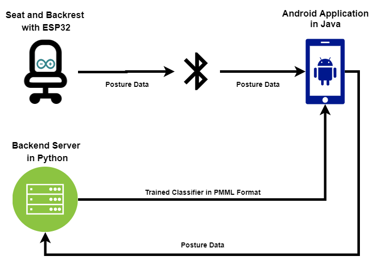
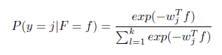

Motivation
In the modern world, we spend most of our lives sitting. Be it for work, school, or recreation, the average person spends
a large portion of their day sitting in front of computer. Employees with white color jobs typically spend nearly 8 hours
a day in front of their computer at work. With the COVID-19 pandemic, the same can be said for students, who have been
relegated to online classes taken from their desks at home. According to an analysis, published in the Journal of the American
Medical Association, the average American spends over 6 hours a day sitting down, an increase from a similar study done in 2007.
For teenagers ages 12 to 19, this number is even higher at 8 hours a day.
Spending time sitting means more time where our seated
posture matters. And unfortunately for us, our posture can have real effects on our health. Poor posture has been linked to
headaches and neck pain, a decrease in shoulder mobility, and weakness in the abdominal and buttock muscles. Furthermore, poor
posture can have negative impacts on the respiratory system. With time spent sitting rising, and the potential impacts of poor
posture, we were motivated to create this project: a posture detecting chair.
System Overview
The system consists of three main blocks: 1) The seat and backrest, 2) the mobile application, and 3) the server

The seat and backrest are filled with a series of sensors. These sensors are connected to an ESP32 microprocessor,
which structures the data into a packet and sends it over Bluetooth to the mobile application.
The mobile application provides feedback to the user regarding their current posture. Currently, we are attempting
to have the mobile application handle the classification, rather than having to ping the server to classify the data
that it has received. This structure would improve the feedback time, avoiding the latency of sending and receiving data
from the server. However, there are some limitations with Android applications that may make this difficult
The server stores relevant data on the user and a historic record of their posture. As it stands, the server stores
a trained classifier for each user that is sent to the mobile application on login. This structure is subject to change if we are
unable to properly integrate the classifier into the Android application.
Front end: Android Application

The mobile application on Android is written in Java using Android studio. The application will be used to offer both immediate and long term feedback to the user.
When the user assumes an improper posture, the app will produce a notification to alert the user to fix their posture. As the user sits on the cushions, pressure sensor data will be
collected through the Arduino. This data is formatted into an array so that each element corresponds to the reading of a single sensor. It is then transmitted wirelessly via bluetooth
to the pre-trained machine learning model, which classifies the posture. Pressure sensor data will be sent to the model periodically to be classified so
that any improper posture may be immediately detected.
The classification model will be custom made for each user. In order to use the application, each user must create an account and go through a calibration phase where the user is told
to sit in various postures. During calibration, sensor data is collected and sent to the server where it is used to train an unique classification model for the user. The model is then converted
to pmml file format, sent back to the application, and stored in the user's mobile device. In future uses of the application, the pmml file can be quickly loaded into a classifier in Java
that allows us to perform classification directly on the client side. We hope that this will reduce latency during classification and make it as real-time as possible since there would be
no delays from network requests.
In the long term, the application will attempt to find patterns of bad posture in the data in order to suggest appropriate exercises to fix them. Users will have the ability to view historic
posture data as well as analytic on that posture set.
Back end
The back end server is written in Python and primarily interfaces with the frontend through Flask. The
front end sends HTTP requests, which are received and processed by the backend.
Data is stored in a MySQL database and is accessed by the backend through the SQLAlchemy library. Storage for
the user posture models is done by saving the generated models in a .pmml format and associating the file
name with the id of the user in the user data model database. The PMML format was chosen over a Python pickle
to allow for the usage of a Python generated classifier in an Android environment. When a request is made to
get the model for a user, the backend retrieves the file name from the database and sends the corresponding
PMML file located in server storage. Said request has a boolean flag to generate a new model which if set to
true, will generate a new model, overwrite the existing PMML file as well as the database entry, and then send
back the new model.
The training data for users is stored with the user id, the identified posture, the sensor data, and a
timestamp of when the data was collected. The purpose of this database is to store and retrieve data for
generating new models and updating preexisting models if requested.
Physical Design
Our device is a combination of a back and seat cushion that can be placed on any chair. A back and seat cushion is more portable than an entire chair. Additionally, the cushions are ergonomically designed to promote better posture while being comfortable. Sensors will be placed on the back and seat cushions such that they do not interfere with the user’s comfort, meeting our requirement of being non-intrusive. The sensors interface with the ESP32, which reads and organizes all of the sensor readings into a format that is easy to process by the application. The ESP32 is stored in a compartment located behind the seat cushion and below the back cushion, where this an unused gap between the cushions and the chair.
Sensors
We created custom pressure sensors using a piezo-resistive mateiral called Velostat. For our conductors, wires were soldered to cooper tape, and one stirp of copper tape was placed on each side ofthe Velostat. Each side of the Velostat was then covered with aluminum foil, and regular tape was used to keep the aluminum foil, copper tape, and Velostat compressed against each other. Using this method, we can construct sensors of any size and of any number, which allow us to easily change the placement pattern of our sensor array if needed.
Microprocessor Chip
The microprocessor chip we used was the ESP32-WROOM-32 module. The module has built in Bluetooth and WiFi capabilites, allowing for wireless transfer of sensor data to the Android application.
Classification Algorithm
The machine learning algorithm used to classify the postures is logistic regression. Logistic regression is a classification technique which finds a linear decision boundary to separate multiple
classes. For instance, to separate two postures, the classifier finds a vector of coefficients w = (w1,...,wm) such that
wT f = Σ wl*fl is positive for feature values f = (f1,...,fm) from one posture, and negative for
the other. For k postures, logistic regression models the conditional likelihood of posture j, P(y = j | F = f)
given features F = f as:

where wj are posture specific vectors found by the training algorithm. In order to
classify an unseen observation f, the algorithm would select the most probable posture, i.e., select j such
that P(y = j | F = f) is maximized.
The posture classification model is built in Python and uses the Scikit-learn
library. Using the data collected, logistic regression models are train and evaluated. K-fold cross-validation was used to tune hyper-parameters and select the model with the best accuracy. In addition, the
confusion matrix will be used for evaluation in order to ensure the occurrences of false positives are kept at a
minimum.
Project Demo
In this demo, we test out some common postures on our posture detecting chair to verify the accuracy of our system.